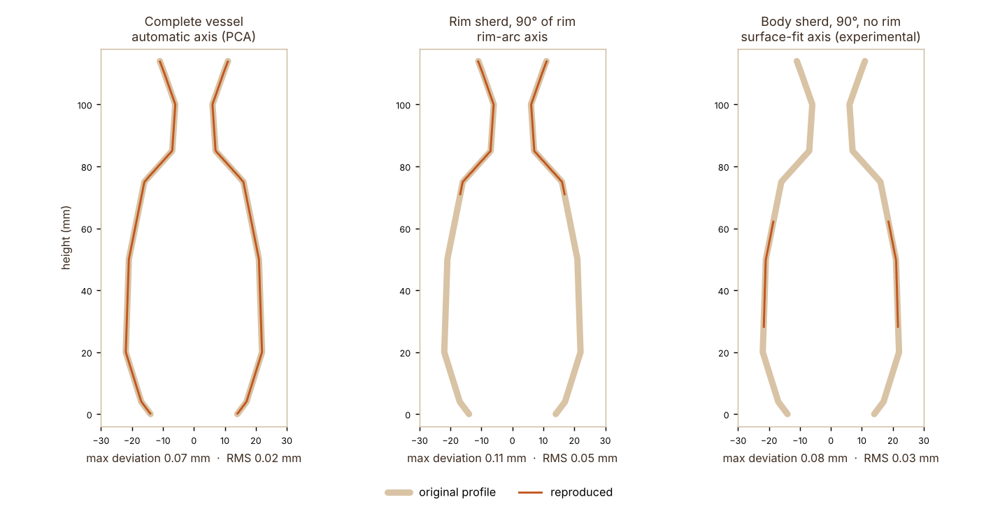

Result
The pipeline's drawing laid over the original 2D profile it was asked to reproduce.

What this is. The vessel is test geometry with a known profile, run through the real pipeline and read back from the published SVG. It shows the processing reproduces the line. It is not yet a result from a photographed sherd, so it says nothing about camera or reconstruction error. The body-sherd panel uses the experimental surface-fit axis.
The drawing it produces
Real-sherd results will replace this page after the rig is built. See Hardware & inputs.